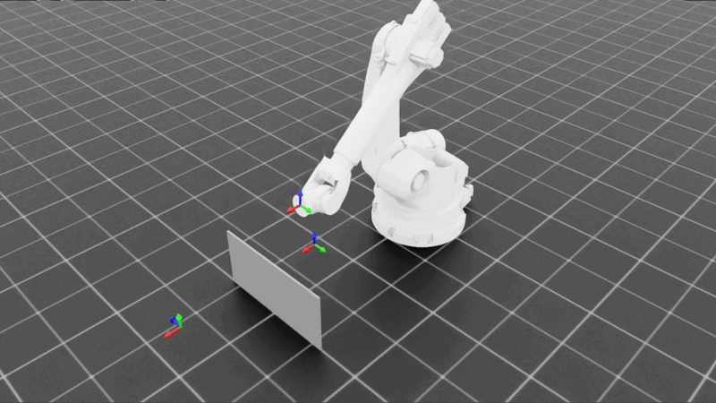
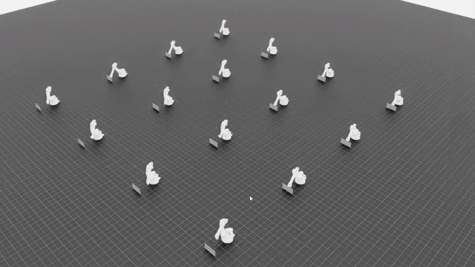

Gdy robotyka
przemysłowa
spotyka AI.
Uczymy modele generować bezkolizyjne trajektorie ruchu dla robotów przemysłowych.
Działamy offline, na cyfrowym bliźniaku znanej sceny — dzięki czemu mamy czas, by trajektoria była nie tylko bezpieczna, ale i krótsza w czasie cyklu niż ta zaprogramowana ręcznie.

* tak naprawdę było tylko trzech Bartoszów — to wciąż dużo, ale stronę robiło AI, więc jakieś błędy w liczeniu muszą być.
Problem
Po co to wszystko?
Roboty muszą się ruszać. Najlepiej bez kolizji.
W fabryce ramię robota musi przejść z punktu A do punktu B — omijając przeszkody, inne maszyny i samego siebie. Ręczne programowanie takich trajektorii jest żmudne, a klasyczne planery często wybierają ścieżki dłuższe niż to konieczne.
- Duża skala: fabryki to tysiące robotów i dziesiątki tysięcy trajektorii
- Duży koszt: programowanie offline robi się raz, ale działa w produkcji latami
- Duży efekt: każda poprawa to realne oszczędności i niezawodność linii
W praktyce buduje się i weryfikuje sceny w narzędziach takich jak Delmia, Process Simulate czy RobotStudio.
Nasze podejście
Optymalizujemy offline, na statycznym, znanym zadaniu — i optymalizujemy dwie rzeczy naraz:
Model generuje rozwiązanie raz, a potem mamy czas, żeby dopieścić ścieżkę pod konkretną instancję zadania.
Jak to się robi dziś?
Współczesne planery najczęściej naprawiają kolizje iteracyjnie: wykrywają zderzenie, zatrzymują się, wstawiają punkt korekcyjny i dzielą trasę na nowe segmenty — a potem powtarzają to rekurencyjnie, aż znikną kolizje. Działa, ale każda poprawka może rodzić kolejne, mniejsze kolizje.
Co odróżnia nasz problem?
Jak to działa
Wejście → magia → wyjście
Środowisko + punkty start/koniec
Scena 3D oraz pozycje, które robot ma odwiedzić.
Punkty pośrednie — trajektoria
Gładka, bezkolizyjna ścieżka ruchu ramienia.
Reprezentacje 3D
Scenę kodujemy na trzy sposoby — Point Cloud, Voxel Grid i SDF — żeby sieć „rozumiała” geometrię przeszkód.
Architektura (agent RL)
Enkodery sceny i kontekstu zadania dają agentowi „wzrok przestrzenny”. Strategia agenta generuje punkty pośrednie, a symulator zwraca nagrodę. Bez reprezentacji sceny model zna cele, ale nie widzi przeszkód między nimi.
Co optymalizujemy
Główne (priorytet): bezkolizyjność i czas przejazdu.
Pomocnicze: kompletność ↑, długość trasy ↓, płynność ↑, głębokość kolizji ↓.
Jak trenujemy: uczenie ze wzmocnieniem
Rozważaliśmy heurystyki, sampling i algorytmy genetyczne — ostatecznie postawiliśmy na uczenie ze wzmocnieniem (RL), a z wstępnych eksperymentów wybraliśmy algorytm PPO.
- Agent uczy się bezpośrednio w symulacji, na tysiącach scen naraz
- Nagroda łączy bezkolizyjność, czas i metryki pomocnicze
- Najpierw model ogólny, potem dostrajanie pod konkretną scenę
ostrzeżenie: trajektoria może być jeszcze niedotrenowana

Symulator: nasz własny „Digital Twin”
Zbudowaliśmy cyfrowego bliźniaka zadania z prawdziwej fabryki, oparty na NVIDIA IsaacSim i IsaacLab.
- Ewaluacja tysięcy trajektorii jednocześnie
- Pomiar metryk jakości w locie
- Trening modeli bezpośrednio w symulacji

Skąd wzięliśmy dane?
Problem z dostępnością danych rozwiązaliśmy po swojemu — własnym generatorem (inspirowanym Roboballet od Intrinsic.AI):
Najciekawsze wyniki
Liczby, które faktycznie spadły tam, gdzie chcieliśmy
(model fine-tuning)
realistycznych
(lepszy niż człowiek: 19.47 s)
Tak wygląda gotowe rozwiązanie
Trajektoria wygenerowana przez dotrojony model na ręcznie zbudowanej, realistycznej scenie. Ramię odwiedza po kolei wszystkie punkty docelowe gładką, bezkolizyjną ścieżką — to dokładnie ten przebieg, który dał 0 kolizji i 16.64 s czasu cyklu.
Nagranie wprost z naszej prezentacji końcowej (eksperyment fine-tuning, dane manualne).
Dwa wnioski, którymi się chwalimy
Trening na danych syntetycznych poprawia wyniki na danych prawdziwych. Z ~6.4 kolizji i 60% kompletności „przed treningiem” zeszliśmy do ~2.0 kolizji i 99.5% kompletności po treningu na 200 scenach syntetycznych.
Już model bazowy bije człowieka. Na scenach tworzonych ręcznie średni czas trajektorii spadł z 19.47 s (człowiek) do 17.74 s (model bazowy), a po dostrojeniu do docelowej sceny do 16.64 s — przy 0 kolizji i 100% kompletności.
Dostrajanie zbiega tam, gdzie trzeba. W trakcie dotrenowywania konkretnej sceny nagroda rośnie, czas przejazdu spada, a liczba kolizji schodzi do zera. Skoro liczymy offline i mamy czas — wręcz błędem byłoby z tej możliwości nie skorzystać.
Wszystkie liczby pochodzą z naszej prezentacji końcowej. Tak, sprawdziliśmy je dwa razy. Prawie.
Dalsze kroki
To nie jest prawdziwa oferta. Czasu cyklu nie da się wybrać suwakiem. (Niestety.)
Materiały
Do pobrania i obejrzenia